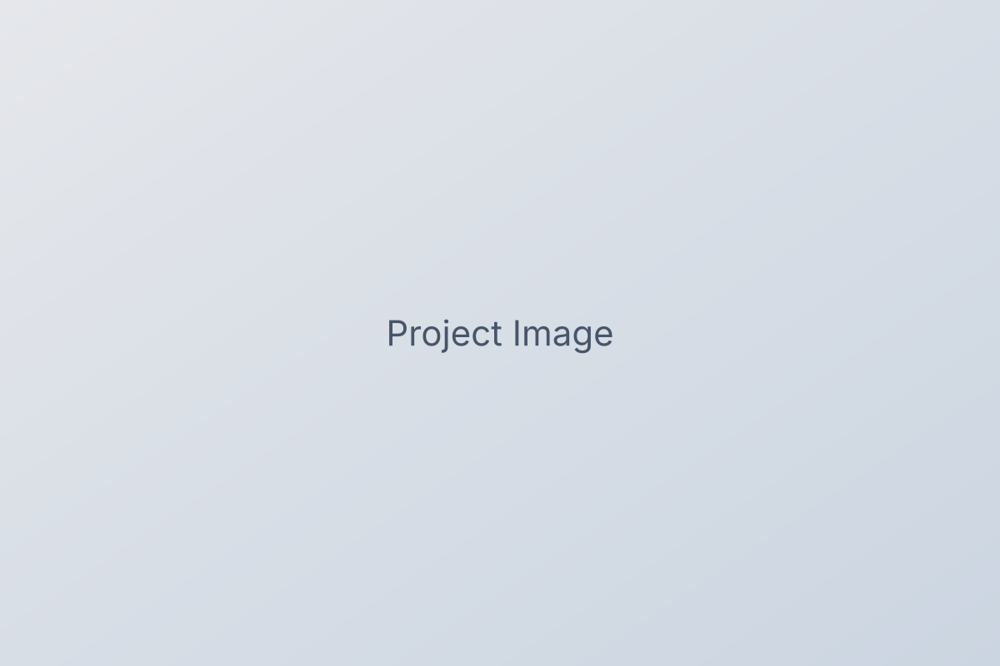

ComptonNet
Direct source reconstruction for Compton cameras; leverages discarded events to improve fidelity at low statistics.
Astrophysics × Machine Learning • Compton Imaging (COSI) • GRB Localization • ML for Physical Sciences
I build machine‑learning methods for high‑energy astrophysics: Compton telescope image reconstruction for NASA’s COSI mission, GRB localization, and ML for large optical surveys. I care about reproducible, production‑ready science.
I’m a researcher working at the intersection of astrophysics and machine learning. My recent work includes high‑resolution Compton imaging for COSI, Deep Sets and SetTransformers for event‑set regression, physics‑aware losses for angular targets, and robust, scalable pipelines (PyTorch, MLflow, Docker, HPC/Slurm).
A direct reconstruction network for Compton cameras using set‑based encoders, angular embeddings, and cosine/spherical losses. Includes uncertainty & calibration tooling.
Event‑set regression from variable‑length Compton events to (l, b) using permutation‑invariant encoders, vMF targets, and error‑aware evaluation (MAD/AE/RMS vs. event count).

Direct source reconstruction for Compton cameras; leverages discarded events to improve fidelity at low statistics.
Masked autoencoding for SDSS images with redshift regression head; tutorial‑style code for students.
Compact galaxy classification with imaging+photometry fusion; exploration of ViTs for faint objects.
Short notes on ML for the physical sciences, Compton cameras, and teaching.
Email: your.email@university.edu • GitHub: @yourusername